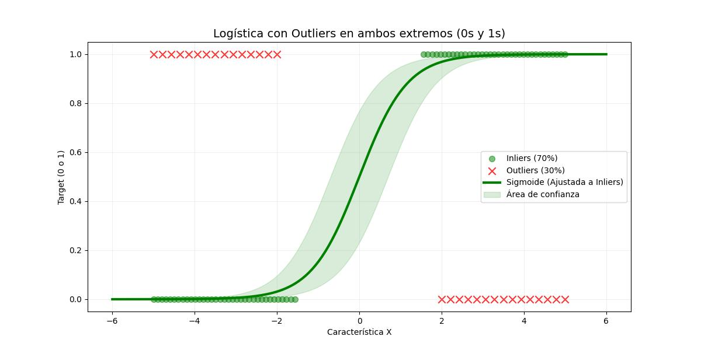
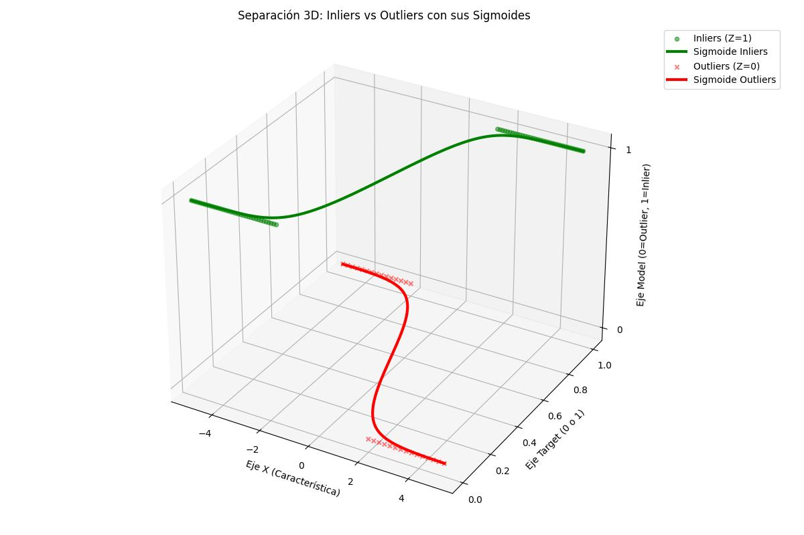

When the blue line is up (Z≈1), the system indicates: "Higher probability that estimating with the green model is correct."
When the blue line drops down (Z≈0), the system warns: "Higher probability that estimating with the red model is correct."
|  | RANSAC (Random Sample Consensus) calculates inliers and outliers by randomly selecting a subset of data points to fit a model, and then evaluating how many points fit that model within a tolerance threshold. Points that meet this criterion are classified as inliers, while those that do not are considered outliers. |
|  | 1. Inlier Expert (Green at Z=1): This model predicts the inliers. 2. Outlier Expert (Red at Z=0): This model predicts the outliers. |
|
|
| Gating Network (Blue Line): It is the probabilistic selector that decides which expert is correct according to the data zone. When the blue line is up (Z≈1), the system indicates: "Higher probability that estimating with the green model is correct." When the blue line drops down (Z≈0), the system warns: "Higher probability that estimating with the red model is correct." |
|
| I weigh the result of the two expert models with the probability indicated by the Gating Network. |